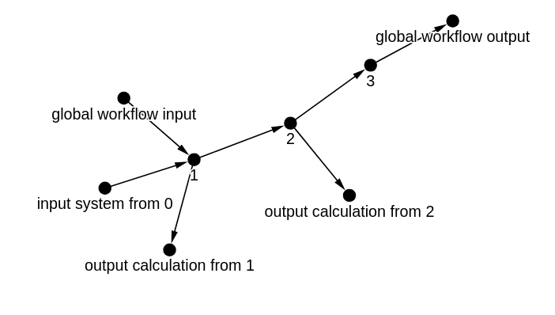
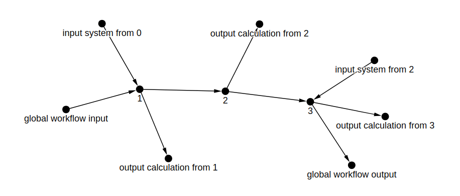

3 step linear proof of concept workflow¶
See also: Explanation > Workflows
This is not a working example, but rather more of a template to demonstrate the overall idea of the functionalities for generating NOMAD's custom workflow files, and to showcase some options which may not be used in the working examples.
import gravis as gv
from nomad_utility_workflows.utils.workflows import build_nomad_workflow, nodes_to_graph
We have a workflow
node_attributes = {
0: {
'name': 'global workflow input',
'type': 'input',
'path_info': {
'upload_id': '<input_upload_id>',
'entry_id': None,
'mainfile_path': '<input_mainfile>',
'supersection_index': 0,
'section_index': 0,
'section_type': 'method',
},
'out_edge_nodes': [1],
},
1: {
'name': '1',
'type': 'task',
'entry_type': 'simulation',
'path_info': {
'upload_id': None,
'entry_id': '<task_1_entry_id>',
'mainfile_path': '<task_1_mainfile>',
'section_type': 'workflow2',
},
'inputs': [
{
'name': 'input system from 0',
'path_info': {
'section_type': 'system',
'supersection_index': 0,
'section_index': 0,
},
}
],
'outputs': [
{
'name': 'output calculation from 1',
'path_info': {
'section_type': 'calculation',
'supersection_index': 0,
'calculation_index': -1,
},
}
],
},
2: {
'name': '2',
'type': 'workflow',
'entry_type': 'simulation',
'path_info': {
'upload_id': None,
'entry_id': None,
'mainfile_path': '<task_2_mainfile>',
},
'inputs': [
{
'name': 'input system from 1',
'path_info': {
'section_type': 'system',
'supersection_index': 0,
'section_index': -1,
},
'out_edge_nodes': [1],
}
],
'outputs': [
{
'name': 'output calculation from 2',
'path_info': {
'section_type': 'calculation',
'supersection_index': 0,
'calculation_index': -1,
},
}
],
},
3: {
'name': '3',
'type': 'workflow',
'entry_type': 'simulation',
'path_info': {
'upload_id': None,
'entry_id': None,
'mainfile_path': '<task_3_mainfile>',
},
'in_edge_nodes': [2],
'out_edge_nodes': [],
},
4: {
'name': 'global workflow output',
'type': 'output',
'path_info': {
'upload_id': None,
'entry_id': None,
'mainfile_path': '<output_mainfile>',
'supersection_index': -1,
'section_type': 'results',
},
'in_edge_nodes': [
3
],
},
}
workflow_graph_input = nodes_to_graph(node_attributes)
gv.d3(
workflow_graph_input,
node_label_data_source='name',
edge_label_data_source='name',
zoom_factor=1.5,
node_hover_tooltip=True,
)

for node_key, node_attributes in workflow_graph_input.nodes(data=True):
print(node_key, node_attributes)
0 {'name': 'global workflow input', 'type': 'input', 'path_info': {'upload_id': '<input_upload_id>', 'entry_id': None, 'mainfile_path': '<input_mainfile>', 'supersection_index': 0, 'section_index': 0, 'section_type': 'method'}, 'out_edge_nodes': [1]}
1 {'name': '1', 'type': 'task', 'entry_type': 'simulation', 'path_info': {'upload_id': None, 'entry_id': '<task_1_entry_id>', 'mainfile_path': '<task_1_mainfile>', 'section_type': 'workflow2'}}
2 {'name': '2', 'type': 'workflow', 'entry_type': 'simulation', 'path_info': {'upload_id': None, 'entry_id': None, 'mainfile_path': '<task_2_mainfile>'}}
3 {'name': '3', 'type': 'workflow', 'entry_type': 'simulation', 'path_info': {'upload_id': None, 'entry_id': None, 'mainfile_path': '<task_3_mainfile>'}, 'in_edge_nodes': [2], 'out_edge_nodes': []}
4 {'name': 'global workflow output', 'type': 'output', 'path_info': {'upload_id': None, 'entry_id': None, 'mainfile_path': '<output_mainfile>', 'supersection_index': -1, 'section_type': 'results'}, 'in_edge_nodes': [3]}
5 {'type': 'input', 'name': 'input system from 0', 'path_info': {'section_type': 'system', 'supersection_index': 0, 'section_index': 0}}
6 {'type': 'output', 'name': 'output calculation from 1', 'path_info': {'section_type': 'calculation', 'supersection_index': 0, 'calculation_index': -1}}
7 {'type': 'output', 'name': 'output calculation from 2', 'path_info': {'section_type': 'calculation', 'supersection_index': 0, 'calculation_index': -1}}
for edge_1, edge_2, edge_attributes in workflow_graph_input.edges(data=True):
print(edge_1, edge_2, edge_attributes.get('inputs'))
print(edge_1, edge_2, edge_attributes.get('outputs'))
0 1 None
0 1 None
1 6 [{'name': 'output calculation from 1', 'path_info': {'section_type': 'calculation', 'supersection_index': 0, 'calculation_index': -1}}]
1 6 None
1 2 None
1 2 [{'name': 'input system from 1', 'path_info': {'section_type': 'system', 'supersection_index': 0, 'section_index': -1}, 'out_edge_nodes': [1]}]
2 7 [{'name': 'output calculation from 2', 'path_info': {'section_type': 'calculation', 'supersection_index': 0, 'calculation_index': -1}}]
2 7 None
2 3 None
2 3 None
3 4 None
3 4 None
5 1 None
5 1 [{'name': 'input system from 0', 'path_info': {'section_type': 'system', 'supersection_index': 0, 'section_index': 0}}]
workflow_graph_output = build_nomad_workflow(
destination_filename='test_workflow.archive.yaml',
workflow_name='toy_workflow',
workflow_graph=workflow_graph_input,
write_to_yaml=True,
)
gv.d3(
workflow_graph_output,
node_label_data_source='name',
edge_label_data_source='name',
zoom_factor=1.5,
node_hover_tooltip=True,
)

for node_key, node_attributes in workflow_graph_output.nodes(data=True):
print(node_key, node_attributes)
0 {'name': 'global workflow input', 'type': 'input', 'path_info': {'upload_id': '<input_upload_id>', 'entry_id': None, 'mainfile_path': '<input_mainfile>', 'supersection_index': 0, 'section_index': 0, 'section_type': 'method'}, 'out_edge_nodes': [1]}
1 {'name': '1', 'type': 'task', 'entry_type': 'simulation', 'path_info': {'upload_id': None, 'entry_id': '<task_1_entry_id>', 'mainfile_path': '<task_1_mainfile>', 'section_type': 'workflow2'}}
2 {'name': '2', 'type': 'workflow', 'entry_type': 'simulation', 'path_info': {'upload_id': None, 'entry_id': None, 'mainfile_path': '<task_2_mainfile>'}}
3 {'name': '3', 'type': 'workflow', 'entry_type': 'simulation', 'path_info': {'upload_id': None, 'entry_id': None, 'mainfile_path': '<task_3_mainfile>'}, 'in_edge_nodes': [2], 'out_edge_nodes': []}
4 {'name': 'global workflow output', 'type': 'output', 'path_info': {'upload_id': None, 'entry_id': None, 'mainfile_path': '<output_mainfile>', 'supersection_index': -1, 'section_type': 'results'}, 'in_edge_nodes': [3]}
5 {'type': 'input', 'name': 'input system from 0', 'path_info': {'section_type': 'system', 'supersection_index': 0, 'section_index': 0, 'mainfile_path': '<task_1_mainfile>'}}
6 {'type': 'output', 'name': 'output calculation from 1', 'path_info': {'section_type': 'calculation', 'supersection_index': 0, 'calculation_index': -1, 'mainfile_path': '<task_1_mainfile>'}}
7 {'type': 'output', 'name': 'output calculation from 2', 'path_info': {'section_type': 'calculation', 'supersection_index': 0, 'calculation_index': -1, 'mainfile_path': '<task_2_mainfile>'}}
8 {'type': 'input', 'name': 'input system from 2', 'path_info': {'section_type': 'system', 'mainfile_path': '<task_2_mainfile>'}}
9 {'type': 'output', 'name': 'output calculation from 3', 'path_info': {'section_type': 'calculation', 'mainfile_path': '<task_3_mainfile>'}}
for edge_1, edge_2, edge_attributes in workflow_graph_output.edges(data=True):
print(edge_1, edge_2, edge_attributes.get('inputs'))
print(edge_1, edge_2, edge_attributes.get('outputs'))
0 1 []
0 1 []
1 6 [{'name': 'output calculation from 1', 'path_info': {'section_type': 'calculation', 'supersection_index': 0, 'calculation_index': -1, 'mainfile_path': '<task_1_mainfile>'}}]
1 6 []
1 2 []
1 2 [{'name': 'input system from 1', 'path_info': {'section_type': 'system', 'supersection_index': 0, 'section_index': -1, 'mainfile_path': '<task_1_mainfile>'}, 'out_edge_nodes': [1]}]
2 7 [{'name': 'output calculation from 2', 'path_info': {'section_type': 'calculation', 'supersection_index': 0, 'calculation_index': -1, 'mainfile_path': '<task_2_mainfile>'}}]
2 7 []
2 3 []
2 3 [{'name': 'input system from 2', 'path_info': {'section_type': 'system', 'mainfile_path': '<task_2_mainfile>'}}]
3 4 [{'name': 'output calculation from 3', 'path_info': {'section_type': 'calculation', 'mainfile_path': '<task_3_mainfile>'}}]
3 4 []
3 9 None
3 9 None
5 1 []
5 1 [{'name': 'input system from 0', 'path_info': {'section_type': 'system', 'supersection_index': 0, 'section_index': 0, 'mainfile_path': '<task_1_mainfile>'}}]
8 3 None
8 3 None
workflow2:
name: toy_workflow
inputs:
- name: global workflow input
section: /uploads/<input_upload_id>/archive/mainfile/<input_mainfile>#/run/0/method/0
- name: input system from 0
section: ../upload/archive/mainfile/<task_1_mainfile>#/run/0/system/0
outputs:
- name: global workflow output
section: ../upload/archive/mainfile/<output_mainfile>#/workflow2/results/-1
- name: output calculation from 3
section: ../upload/archive/mainfile/<task_3_mainfile>#/run/-1/calculation/-1
tasks:
- m_def: nomad.datamodel.metainfo.workflow.TaskReference
name: '1'
inputs:
- name: input system from 0
section: ../upload/archive/mainfile/<task_1_mainfile>#/run/0/system/0
outputs:
- name: output calculation from 1
section: ../upload/archive/mainfile/<task_1_mainfile>#/run/0/calculation/-1
- m_def: nomad.datamodel.metainfo.workflow.TaskReference
name: '2'
task: ../upload/archive/mainfile/<task_2_mainfile>#/workflow2
inputs:
- name: input system from 1
section: ../upload/archive/mainfile/<task_1_mainfile>#/run/0/system/-1
outputs:
- name: output calculation from 2
section: ../upload/archive/mainfile/<task_2_mainfile>#/run/0/calculation/-1
- m_def: nomad.datamodel.metainfo.workflow.TaskReference
name: '3'
task: ../upload/archive/mainfile/<task_3_mainfile>#/workflow2
inputs:
- name: input system from 2
section: ../upload/archive/mainfile/<task_2_mainfile>#/run/-1/system/-1
outputs:
- name: output calculation from 3
section: ../upload/archive/mainfile/<task_3_mainfile>#/run/-1/calculation/-1